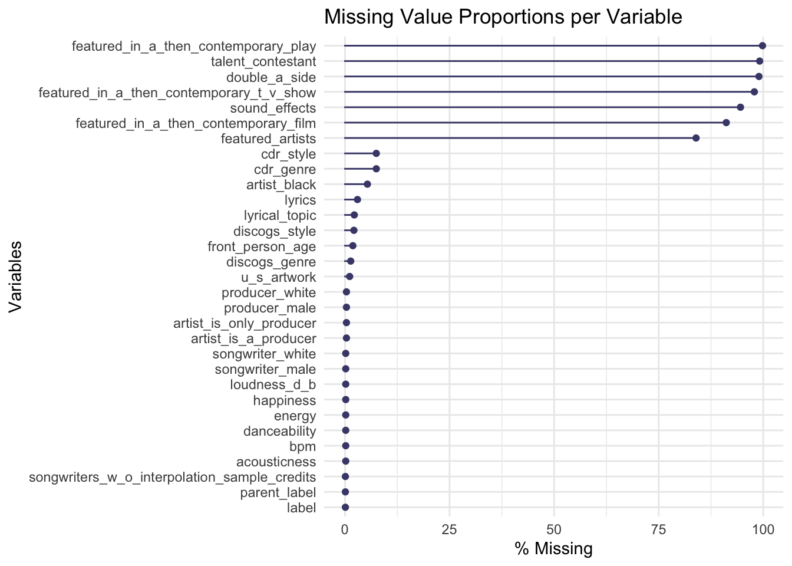
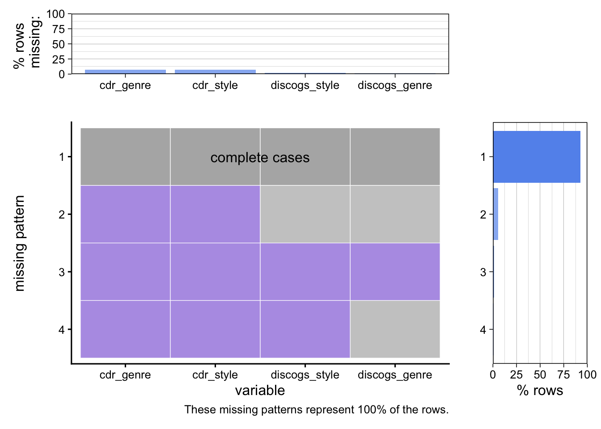
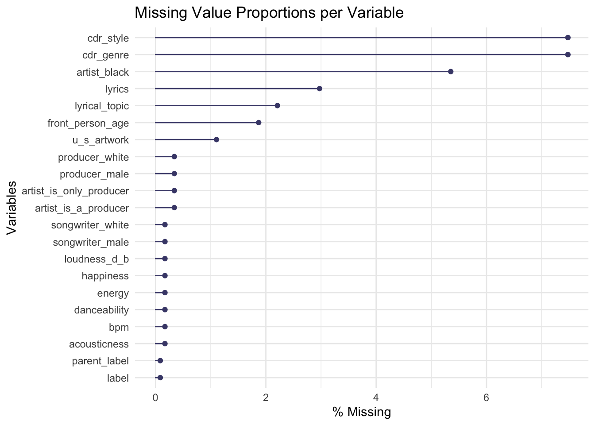

Rows: 1177 Columns: 105
── Column specification ────────────────────────────────────────────────────────
Delimiter: ","
chr (26): song, artist, label, parent_label, cdr_genre, cdr_style, discogs_...
dbl (78): weeks_at_number_one, non_consecutive, rating_1, rating_2, rating_...
dttm (1): date
ℹ Use `spec()` to retrieve the full column specification for this data.
ℹ Specify the column types or set `show_col_types = FALSE` to quiet this message.
Rows: 97 Columns: 1
── Column specification ────────────────────────────────────────────────────────
Delimiter: ","
chr (1): lyrical_topics
ℹ Use `spec()` to retrieve the full column specification for this data.
ℹ Specify the column types or set `show_col_types = FALSE` to quiet this message.
2.1 Description
The data contains every song to ever top the Billboard Hot 100 between August 4, 1958 and January 11, 2025 and is compiled by Chris Dalla Riva as an accompaniment to his book “Uncharted Territory: What Numbers Tell Us about the Biggest Hit Songs and Ourselves” being published this November. The dataset itself contains data from multiple sources aside from the author, including BPM metrics provided by Spotify, genre details provided by Discogs, and other variables citing Tidal, Songview, and Fred Bronson’s “The Billboard Book of Number One” as sources.
We chose this dataset specifically because it has numerous variables that will let us explore in depth the various relationships among musical, lyrical, and production characteristics between the top songs. We were also drawn to it because we both love music and wanted a personally engaging project. However, we spotted potential issues with the data. The “label” variable, for example, provides the name of the label under which the song was distributed. This could be a problem when looking at distribution of songs under certain labels over time, since businesses often experience rapid changes (e.g. maybe a label was acquired by another company, some labels could have gone through bankruptcy, some labels might have rebranded). Another potential issue is that there are multiple variables for song genre in the dataset, one assigned subjectively by the author, and one assigned by Discogs. This subjectivity poses a problem when looking at genre popularity over time.
2.2 Missing value analysis
Code
missing_billboard <- billboard |>select(where(~any(is.na(.))))gg_miss_var(missing_billboard, show_pct =TRUE) +labs(title ="Missing Value Proportions per Variable")

2.2.1 Observations:
2.2.2 1. Variables with >0.8 missing
There are only a few variables that have >0.8 of its values missing:
For these variables, it makes sense why so many of its values would be missing. Not every song would have a featured artist, or have the main artist be from a talent competition, etc. They are not missing because of corrupt data. We will thus leave these columns out of our analyses.
2.2.3 2. Missing variables with known documentation
The following variables have explanations in the documentation for its missing values
These variables are taken from Spotify data, so they are presumably missing from the dataset because the data is not available through Spotify. Below, I have created a data frame containing rows missing the above Spotify variables. It looks like there are 2 songs responsible for these missing values: “Rock On” by Michael Damian and “Lately” by Divine.
Code
spotify_missing <- billboard |>filter(is.na(bpm) |is.na(energy) |is.na(danceability) |is.na(happiness) |is.na(loudness_d_b) |is.na(acousticness))spotify_missing
As per the data documentation, “If [front_person_age is] blank, then the age(s) could not be accurately located or age did not make sense (i.e., the band was animated)”.
Code
front_person_missing <- billboard |>filter(is.na(front_person_age))front_person_missing
We will now do a short investigation on the other variables:
label, parent_label –> 0.0008
There is only 1 song contributing to these variables’ missing values, and it is “Rich Men North of Richmond” by Oliver Anthony. Upon a quick Google search, this song has no label/parent label because it was self released. This is interesting to note as it is the only song to have charted #1 in the Billboard Hot 100 to be self released!
Code
label_missing <- billboard |>filter(is.na(label) |is.na(parent_label))label_missing
genres <- billboard |>select(cdr_genre, cdr_style, discogs_genre, discogs_style)plot_missing(genres)
Scale for y is already present.
Adding another scale for y, which will replace the existing scale.
Scale for y is already present.
Adding another scale for y, which will replace the existing scale.

Observation 1: There are some instances of discogs_genre != NA and discogs_style = NA where discogs_style is supposed to be “None” (example: The style for “STAY” by Kid Laroi being NA but “Save Your Tears” by The Weeknd being “None”, despite both of them being absent from Discogs).
[IN CLEANING FUNCTION] Change all “NA” on discogs_style where discogs_genre is not NA to be “None”
Observation 2: There are many instances of cdr_genre and cdr_style = NA where discogs are NOT NA.
Since cdr_genre and cdr_style are both subjective interpretations of genre and style from the author, Chris Dalla Riva, we cannot just impute these missing values with our own interpretations. We will be using discogs_genre and discogs_style for genre/style analyses instead.
Observation 3: Only 16 NA instances of BOTH cdr_genre/cdr_style and discogs_genre/discogs_style despite information being available on Discogs
We discovered that these NA instances are likely because the scraping script Chris Dalla Riva used to retrieve genre/style information from Discogs only takes into account songs that appear on Discogs’ “Releases” collection. Some songs that have charted only appear on the album it is part of, under Discogs’ “Master” collection.
[IN CLEANING FUNCTION]We have created our own script (discogs_scrape.py) to scrape the genre/style of these 16 missing instances in the dataset so that we can have complete genre/style columns under discogs_genre and discogs_style. Thus, our genre/style analyses will only be using the aforementioned variables.
artist_black -> 0.0535
They should definitely not be missing because it is a dummy for whether the artist is Black or not. Beyonce, for example, should be a 1. There are 63 missing instances, which would be time consuming to impute. Since artist_white is complete, we might just use it for our analyses instead.
Code
black_missing <- billboard |>filter(is.na(artist_black))dim(black_missing)
There is only 1 missing for songwriters_w_o_interpolation_sample_credits and I think this is a mistake. The songwriters listed in the songwriters column are the songwriters that should be in the songwriters_w_o_interpolation_sample_credits column because they are not sampled songwriters.
[IN CLEANING FUNCTION] We will just impute the missing value for this 1 instance with whatever is in the songwriters column
songwriter_male , songwriter_white -> 0.00169
The only 2 songs with songwriter_male and songwriter_white missing are the only 2 songs with songwriters listed as “Unknown”. This makes sense, so we will leave it as is.
Code
songwritermw_missing <- billboard |>filter(is.na(songwriter_male) |is.na(songwriter_white))unknown <- billboard |>filter(songwriters=="Unknown")
The only 4 songs with missing producer values are because their producers are listed as “Unknown”. This makes sense, so we will leave it as is.
Code
producers_missing <- billboard |>filter(is.na(producer_male) |is.na(producer_white) |is.na(artist_is_a_producer) |is.na(artist_is_only_producer))
2.3 Final Cleaning Function
Get rid of variables >0.8 missing: featured_artists, talent_contestant, sound_effects, featured_in_a_then_contemporary_play, featured_in_a_then_contemporary_film, featured_in_a_then_contemporary_t_v_show, double_a_side
Change all NA on discogs_style where discogs_genre is not NA to be “None”
Export billboard_genre_style_missing.csv <- instances of billboard where both discogs_style and discogs_genre missing
Run discogs_scrape.py on billboard_genre_style_missing.csv
Do join and coalesce
Fix missing instance of songwriters_w_o_interpolation_sample_credits
Write cleaned version to CSV titled “billboard_clean.csv”
Code
# STEP 1: Get rid of variables with > 0.8 missingmissing_proportions <-colMeans(is.na(billboard))drop_cols <-names(missing_proportions[missing_proportions >0.8])billboard <- billboard |>select(-c(drop_cols))
Warning: Using an external vector in selections was deprecated in tidyselect 1.1.0.
ℹ Please use `all_of()` or `any_of()` instead.
# Was:
data %>% select(drop_cols)
# Now:
data %>% select(all_of(drop_cols))
See <https://tidyselect.r-lib.org/reference/faq-external-vector.html>.
Code
# STEP 2: Change all NA on discogs_style where discogs_genre != NA to "None"billboard$discogs_style <-ifelse(is.na(billboard$discogs_style) &!is.na(billboard$discogs_genre),"None", billboard$discogs_style)obs_1 <- billboard |>filter(is.na(discogs_style) &!is.na(discogs_genre))dim(obs_1) # Should be 0 rows
[1] 0 98
Code
# STEP 3: Export instances where both style and genre are missing# Only uncomment this when reproducing# billboard_genre_style_missing <- billboard |># filter(is.na(discogs_genre) & is.na(discogs_style)) |># select(c("song", "artist"))# # write.csv(billboard_genre_style_missing,# "billboard_genre_style_missing.csv", row.names = FALSE)# STEP 4# Run discogs_scrape.py on billboard_genre_style_missing.csv, which will output obs_3.csv# IMPORTANT: Discogs_scrape.py requires you to input your own API token!# obs_3.csv is on the repo# STEP 5: Join with newly scraped dataobs_3 <-read.csv("data/cleaning/obs_3.csv")billboard <- billboard |>left_join( obs_3 |>select(song, artist, discogs_genre, discogs_style),by =c("song", "artist"),suffix =c("_old", "_new") ) |>mutate(discogs_genre =coalesce(discogs_genre_old, discogs_genre_new),discogs_style =coalesce(discogs_style_old, discogs_style_new) ) |>select(-discogs_genre_old, -discogs_genre_new, -discogs_style_old, -discogs_style_new)# STEP 6: Fix missing instance of interpolationbillboard$songwriters_w_o_interpolation_sample_credits <-ifelse(is.na(billboard$songwriters_w_o_interpolation_sample_credits), billboard$songwriters, billboard$songwriters_w_o_interpolation_sample_credits)interpolation_missing <- billboard |>filter(is.na(songwriters_w_o_interpolation_sample_credits))dim(interpolation_missing) # Should be 0
[1] 0 98
Code
# Only uncomment when reproducing# STEP 7: Write cleaned billboard to CSV# write.csv(billboard, file = "billboard_clean.csv", row.names = FALSE)
After cleaning the data, we should have:
No variables with >0.8 values missing
No missing instances for discogs_genre/discogs_style
No missing instances for songwriters_w_o_interpolation_sample_credits
Code
# NEW PLOT: No variables with >0.8 missingmissing_billboard <- billboard |>select(where(~any(is.na(.))))gg_miss_var(missing_billboard, show_pct =TRUE) +labs(title ="Missing Value Proportions per Variable")

Code
# NEW PLOT: No missing genre/style from discogsgenres <- billboard |>select(cdr_genre, cdr_style, discogs_genre, discogs_style)plot_missing(genres)
Scale for y is already present.
Adding another scale for y, which will replace the existing scale.
Scale for y is already present.
Adding another scale for y, which will replace the existing scale.